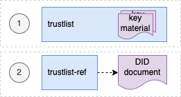

DID Specifications
GDHCN Trustlists
This specification describes the publication of Global Digital Health Certification Network (GDHCN) key material as Decentralized Identifier (DID) documents. DIDs are specified by the W3C DID Core Specification. The DID concept summarizes the core drivers and usage of the DID format in scope of GDHCN.
A key to real interoperability among existing trust networks is to find alignment on trust list formats.
| Version | Status | Description |
|---|---|---|
| 2.0.0 | Draft | 2.0.0 is in pre-released state for verification and feedback. On technical level in the API “v2” is used to address DID documents following version two specification |
| 1.0.0 | Released | 1.0.0 is deprecated and will be replaced by version 2.0.0 |
Trustlists 2.0.0
Version 2.0.0 introduces two variants of the trust lists - embedded and by reference.

For each of development (DEV), user-acceptence testing (UAT) and production (PROD) environments there is a trust list according to the following table:
| Environment | Variant | URL |
|---|---|---|
| DEV | Embedded | https://tng-cdn-dev.who.int/v2/trustlist/did.json |
| DEV | Reference | https://tng-cdn-dev.who.int/v2/trustlist-ref/did.json |
| UAT | Embedded | https://tng-cdn-uat.who.int/v2/trustlist/did.json |
| UAT | Reference | https://tng-cdn-uat.who.int/v2/trustlist-ref/did.json |
| PROD | Embedded | https://tng-cdn.who.int/v2/trustlist/did.json |
| PROD | Reference | https://tng-cdn.who.int/v2/trustlist-ref/did.json |
The embedded type of trustlist carries the key material directly within the DID documents’ verificationMethod property and supports immediate verification. On the root level it contains all keys imported from the trust network gateway (TNG).
The reference type lists link other DID documents, which may contain the actual key material. Therefore reference type trustlists contain only DID ids that can be used to resolve DID documents. This helps to keep the main trustlist documents concise and supports dynamic discovery of DID structures and key material.
DID trustlists structure
Version 2.0.0 introduces a hierarchical structure for DID documents, to support more fine grained resolution and discovery of key material. These DID documents are parameterized by the following according to the levels in the following table.
| Level | Description |
|---|---|
| root | A fixed parameter for all trusted key material or trusted DID references of GDHCN. |
| $domain | Contains trusted key material or DID references of GDHCN for a supported trust domain. $domain should be one of the codes in the GDHCN Trust Domain Value Set. |
| $participant | Contains trusted key material or DID references of GDHCN for a trusted participant. $participant should be one of the codes in the GDHCN Participant Value Set. |
| $usage | Contains trusted key material or DID references of a supported key usage type. $usage type is one of the key usages codes in the GDHCN Key Usage Value Set. |
The levels are organized hierarchically so that they function as filters following an AND logic operation when resolving or discovering key material. Note that “-“ character can be used as a wildcard on each sublevel of root. This allows to omit filtering on the respective level effectively matching all content of that level.
The following examples outline the expected behavior of embedded trustlist:
- tng-cdn.who.int/v2/trustlist/did.json matches all keys for all $domains, $participants and key $usage types.
- tng-cdn.who.int/v2/trustlist/$domain/$participant/did.json matches all key $usage types for a specific $domain AND $participant.
- tng-cdn.who.int/v2/trustlist/-/$participant/did.json matches all key $usage types across all $domains for a specific $participant.
- tng-cdn.who.int/v2/trustlist/$domain/$participant/$usage/did.json matches all keys for a specific key $usage type for a given $domain AND $participant.
- tng-cdn.who.int/v2/trustlist/-/$participant/did.json matches key material or references for all $domains for a specific $participant without filtering the key usage types.
- tng-cdn.who.int/v2/trustlist/-/$participant/$usage/did.json matches keys or references in all $domains for a specific $participant and specific key $usage type.
- tng-cdn.who.int/v2/trustlist/$domain/-/$usage/did.json matches keys for all $participants of a specific $domain filtered by there key $usage type.
- tng-cdn-who.int/v2/trustlist/-/- matches key material for all $domains and all $participants without filtering a specific $usage type so the did.json may contain SCA and DSC keys.
And the following examples outline the expected behavior of reference type trustlist:
- tng-cdn.who.int/v2/trustlist-ref/did.json contains all DID document references of the next sub-level as DID id.
- tng-cdn.who.int/v2/trustlist-ref/$domain/did.json contains all $participant level DID document references as DID id for the given $domain.
- tng-cdn.who.int/v2/trustlist-ref/$domain/$partcipant/did.json contains all key $usage type level DID document references as DID id for the selected $domain and $participant.
- tng-cdn.who.int/v2/trustlist-ref/$domain/$participant/$usage/did.json contains a reference to a DID the embedded trustlist that correlates to the selected $domain, $participant and key $usage type and that contains the key material.
Note: all levels of the reference type trustlist may contain additional DID references linking trusted external DID documents.
The did trustlists structure diagram depicts the reference and contains relations of the trustlist types for the defined levels.


Example DID documents
Reference type DID document linking the embedded trustlist for $domain: DCC, $participant: XXA and key $usage type: DSC.
{
"@context": [
"https://www.w3.org/ns/did/v1",
"https://w3id.org/security/suites/jws-2020/v1"
],
"id": "did:web:worldhealthorganization.github.io:tng-cdn-dev:v2:trustlist-ref:DCC:XXA:DSC",
"controller": "did:web:worldhealthorganization.github.io:tng-cdn-dev:v2:trustlist-ref:DCC:XXA",
"verificationMethod": [
"did:web:worldhealthorganization.github.io:tng-cdn-dev:v2:trustlist:DCC:XXA:DSC"
],
"proof": {
"type": "JsonWebSignature2020",
"created": "2024-11-10T12:00:35Z",
"nonce": "SC56sBBcqqTXh0EPdFlaOWDXxSpwupVa",
"proofPurpose": "assertionMethod",
"verificationMethod": "did:web:raw.githubusercontent.com:WorldHealthOrganization:tng-participants-dev:main:WHO:signing:DID",
"jws": "eyJiNjQiOmZhbHNlLCJjcml0IjpbImI2NCJdLCJhbGciOiJFUzI1NiJ9..MEQCICxoXFEI-o0SupgO0U5BhKjRI1AZaAtAtw_byQMgLm6CAiBTtyJYF7ZMgWTlmivMv5A4In3K6LBEF0AXiCYM2VSSIg"
}
}
Embedded trustlist for $domain: DCC, $participant: XXA and key $usage type: DSC with key matrial:
{
"@context": [
"https://www.w3.org/ns/did/v1",
"https://w3id.org/security/suites/jws-2020/v1"
],
"id": "did:web:worldhealthorganization.github.io:tng-cdn-dev:v2:trustlist:DCC:XXA:DSC",
"controller": "did:web:worldhealthorganization.github.io:tng-cdn-dev:v2:trustlist:DCC:XXA",
"verificationMethod": [
{
"id": "did:web:worldhealthorganization.github.io:tng-cdn-dev:v2:trustlist:DCC:XXA:DSC#XPjhL9Znd1M=",
"type": "JsonWebKey2020",
"controller": "did:web:worldhealthorganization.github.io:tng-cdn-dev:v2:trustlist:DCC:XXA",
"publicKeyJwk": {
"kty": "EC",
"kid": "XPjhL9Znd1M=",
"x5c": [
"MIICuTCCAmCgAwIBAgIUD9k1Q64Eav5r07DQ4Gff/7h7r6QwCgYIKoZIzj0EAwIwdDELMAkGA1UEBhMCWEExFDASBgNVBAgMC1hYQSBDb3VudHJ5MRgwFgYDVQQHDA9YQSBDYXBpdG9sIENpdHkxDDAKBgNVBAoMA1dITzEMMAoGA1UECwwDUiZEMRkwFwYDVQQDDBBOYXRpb25YQV9UTlBfU0NBMB4XDTI0MDgwMjEzNDM0M1oXDTI2MDgwMjEzNDM0M1owfzELMAkGA1UEBhMCWEExFDASBgNVBAgMC1hYQSBDb3VudHJ5MRgwFgYDVQQHDA9YQSBDYXBpdG9sIENpdHkxDDAKBgNVBAoMA1dITzEMMAoGA1UECwwDUiZEMSQwIgYDVQQDDBtIZWFsdGggQWRtaW5pc3RyYXRpb24gb2YgWEEwWTATBgcqhkjOPQIBBggqhkjOPQMBBwNCAAT3TVbWYsSYYarCUv8sfvmv2y0GjDEI+PAkm/92na/zAOoV8O2w7rov/Txk3wwz/jMoKvx+IgSfYoyygtGetYEdo4HEMIHBMA4GA1UdDwEB/wQEAwIHgDAdBgNVHQ4EFgQUhjRj4qGi0+rt7ka7GLiol6q2+78wHwYDVR0jBBgwFoAUoir+zkKsSL7OkG8dPyThX49GLtEwPQYDVR0fBDYwNDAyoDCgLoYsaHR0cDovL2NybC5leGFtcGxlZG9tYWluLmV4YW1wbGUvQ1JML1NDQS5jcmwwMAYDVR0lBCkwJwYLKwYBBAGON49lAQEGCysGAQQBjjePZQECBgsrBgEEAY43j2UBAzAKBggqhkjOPQQDAgNHADBEAiATU7uopFD4U3mLHHQn+0ncg4gb5ZazhhrXMXwzAD4NbgIgd3jcskFPyOoBGut8oyXu+nKYKr5zFCqmXkYlILqCo6Q=",
"MIICMDCCAdWgAwIBAgIUFqWc0xbrcpAettDF8gEymTzDtSkwCgYIKoZIzj0EAwIwdDELMAkGA1UEBhMCWEExFDASBgNVBAgMC1hYQSBDb3VudHJ5MRgwFgYDVQQHDA9YQSBDYXBpdG9sIENpdHkxDDAKBgNVBAoMA1dITzEMMAoGA1UECwwDUiZEMRkwFwYDVQQDDBBOYXRpb25YQV9UTlBfU0NBMB4XDTI0MDgwMjA3MTY0MVoXDTI4MDgwMjA3MTY0MVowdDELMAkGA1UEBhMCWEExFDASBgNVBAgMC1hYQSBDb3VudHJ5MRgwFgYDVQQHDA9YQSBDYXBpdG9sIENpdHkxDDAKBgNVBAoMA1dITzEMMAoGA1UECwwDUiZEMRkwFwYDVQQDDBBOYXRpb25YQV9UTlBfU0NBMFkwEwYHKoZIzj0CAQYIKoZIzj0DAQcDQgAEeKTWEuRQ4ftDRaTBA6++wea8ODmEqCLE/nWTcvcX069g3YlWEokVgEIMEumXcez++bcIayhRYDi4itAqd5DmJ6NFMEMwEgYDVR0TAQH/BAgwBgEB/wIBADAOBgNVHQ8BAf8EBAMCAQYwHQYDVR0OBBYEFKIq/s5CrEi+zpBvHT8k4V+PRi7RMAoGCCqGSM49BAMCA0kAMEYCIQC2+Bl6No20L/uSxr4bJSPDAAJ37UhhH52ppOElxB1dqgIhANbn1ZF0DNWYyH+eKBTrY+14zbzhDxlXWh/Go1OM9ZZ/"
],
"crv": "P-256",
"x": "APdNVtZixJhhqsJS_yx--a_bLQaMMQj48CSb_3adr_MA",
"y": "AOoV8O2w7rov_Txk3wwz_jMoKvx-IgSfYoyygtGetYEd"
}
}
],
"proof": {
"type": "JsonWebSignature2020",
"created": "2024-11-10T12:00:21Z",
"nonce": "Gp3uOuUTNgAFxm31fIjNy7yYt34aOP0g",
"proofPurpose": "assertionMethod",
"verificationMethod": "did:web:raw.githubusercontent.com:WorldHealthOrganization:tng-participants-dev:main:WHO:signing:DID",
"jws": "eyJiNjQiOmZhbHNlLCJjcml0IjpbImI2NCJdLCJhbGciOiJFUzI1NiJ9..MEYCIQD8AbUnGxHgmkqNQTzl6E0ZJocZ0N-vrziFB9-jgRSXbgIhAJUB0Wq5YUJPcywS15JMdoiVJDV_ubWuEZwRnuM5A8QB"
}
}
Note: Specific keys use base64 encoded key id (kid) as identifier, It is represented as fragments (#) in verification method id and can be resolved using client side filtering.
Environments & Repositories
The trustlists are maintained using GitHub and published via GitHub pages.
| Environment | Repository Link | Pages Link |
|---|---|---|
| Development | https://github.com/WorldHealthOrganization/tng-cdn-dev | https://worldhealthorganization.github.io/tng-cdn-dev |
| UAT | https://github.com/WorldHealthOrganization/tng-cdn-uat | https://tng-cdn-uat.who.int |
| Production | tbd. | https://tng-cdn.who.int |
Trustlist Specification 1.0.0
Initial specification is deprecated.
DID Document v1.0 (deprecated)
The unified format is based on the Decentralized Identifiers (DIDs) v1.0 specification. DIDs are globally unique identifier in the form of URIs. The URI scheme includes a method name which corresponds to a standard method by which a DID Document can be resolved. This DID Document is a structured JSON-LD which captures each existing public key (regardless of X.509 or JWK format used) by the members of a trust network in a common format. It allows additional metadata (such as intended purpose and key identifiers) to be added to existing keys with changing the underlying keys themselves. It provides means to publish and cryptographically sign a master lists of keys recognized used by a trust network.
The unified format DID method selected is did:web, a method to retrieve DID Documents via existing web (https) infrastructure. The did:web identifiers have the form <DOMAIN NAME>:<PATH COMPONENT 1>:...: <PATH COMPONENT N>. Resolution is accomplished by https GET against the URL which is formed from this identifier by https://DOMAIN NAME/PATH COMPONENT 1/.../PATH COMPONENT N/did.json. For example did:web:example.com:my:path would resolve a DID Document from the URL https://example.com/my/path/did.json. Additional did methods may be supported in the future.
The DID Document itself should have:
- an ‘id’ field which is the DID itself and represents the DID Subject, in this case the trust list
- a list of public keys within the ‘verificationMethod’ field
- an optional signature via a ‘proof’ field
The verificationMethod array represents the individual signing keys associated with issuers within the entity represented by the DID Subject, an includes:
- an
idfield which is a DID URL composed of the DID for this DID Document and key ID as DID#key - controller of the public key, which can be current document (in case of publishing a key by a trust network member) or the source of the public key in case of an aggregator
- the public key JWK, including the key’s x509 and chain of trust to Root Certificate Authority
The DID Document itself can be signed with addition of a ‘proof’ block containing signature details and key used for verification.
For more information regarding the DID Document format for a Trust List specification, see WHO DDCC Trust List Specification documentation. For an example of a signed DID Document, see Appendix A of the documentation.